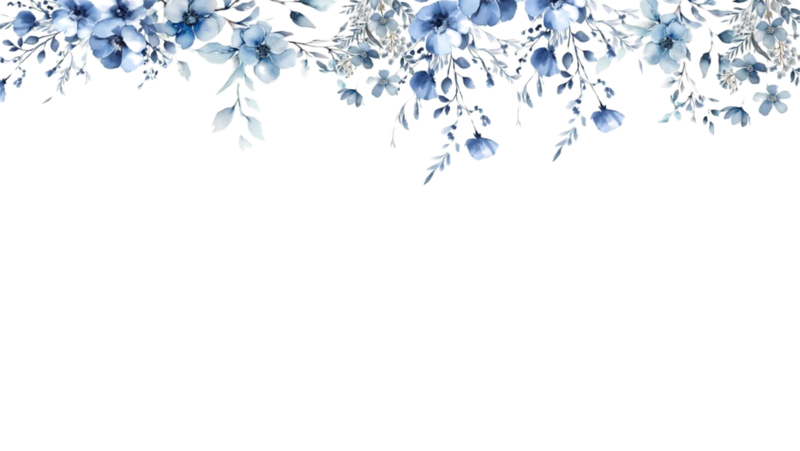
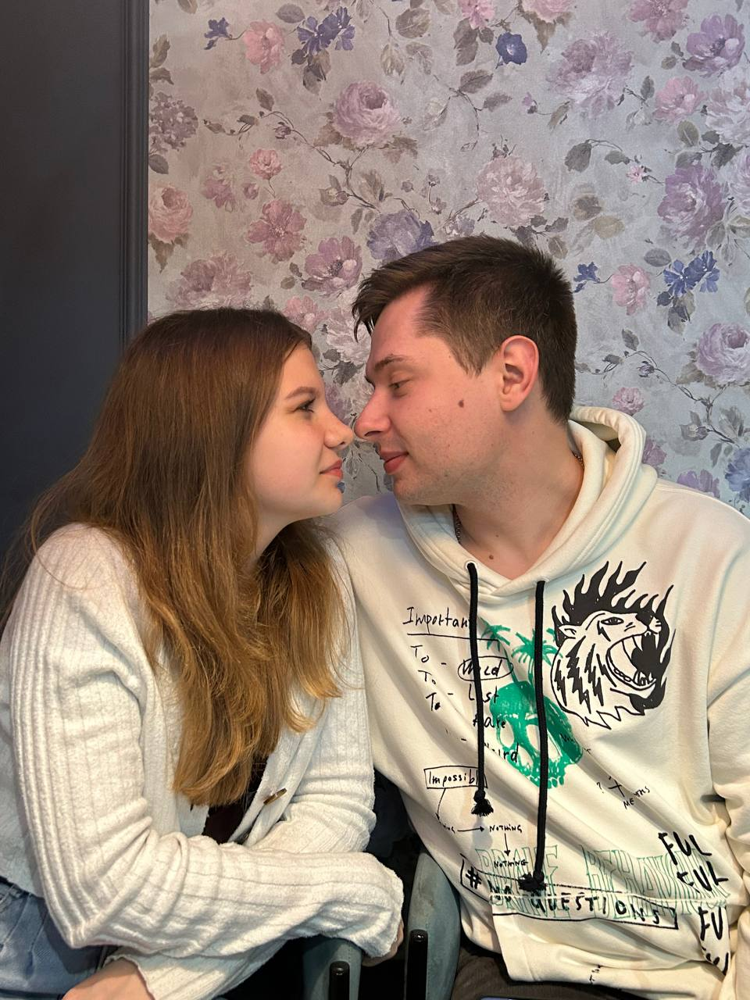
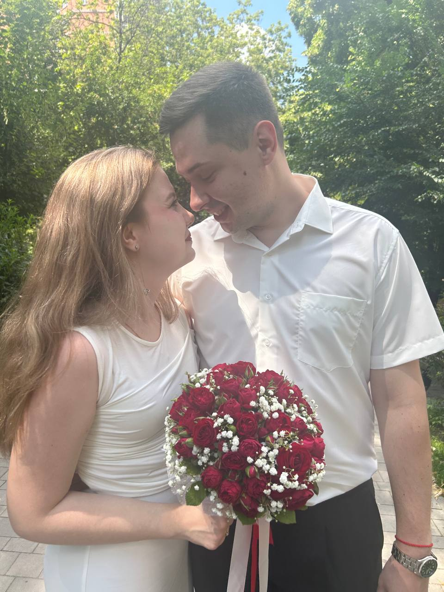

День рождения Екатерины или день Х. Этот прекрасный день Катя решила отметить с Андреем и пойти гулять. Отлично проводя время вместе, Катя тихо призналась в своих чувствах. К большому счастью, Андрей услышал её и ответил взаимностью. Вот так начался их путь к большой и серьезной любви.

для них стало больше, чем просто "Я тебя люблю"

За несколько лет отношений они поняли, что хотят быть друг для друга большим, быть вместе и в горе, и в радости. Их любовь стала не просто чувством, а силой, позволяющей преодолевать трудности. Андрей и Катя стали мужем и женой. Поэтому никогда не бойтесь искрене любить и выходить из привычной и комфортной жизни. Ведь кто знает как одна встреча или день могут изменить судьбу.